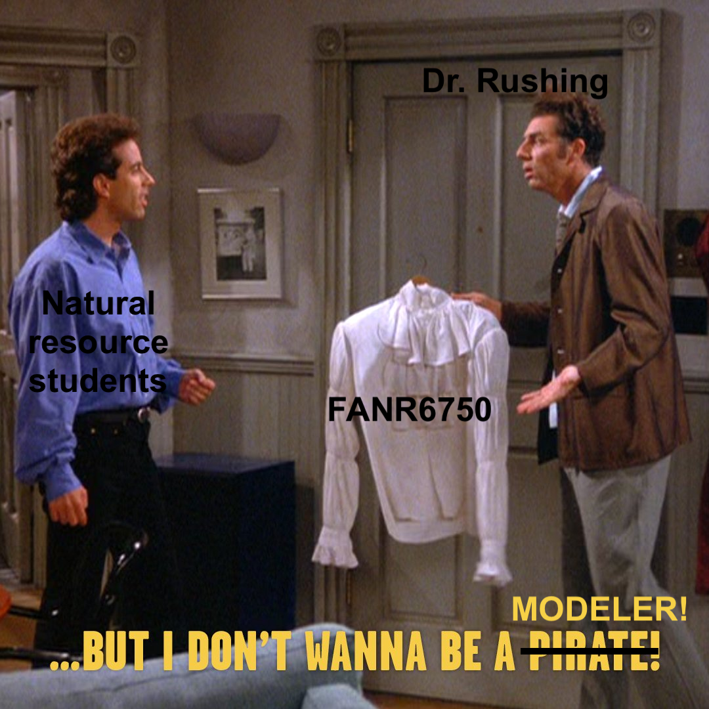
LECTURE 2: introduction to linear models
FANR 6750 (Experimental design)
Fall 2026
outline {{.inverse}}
1) Basic structure of a linear model
2) Parameter interpretation
3) Assumptions
Statistics = Information + Uncertainty
In the last lecture, we learned that statistics is what allows us to make inferences about a population in the face of uncertainty
Statistical inference requires models
what is a model?

what is a model?
an abstraction of reality used to describe the relationship between two or more variables
Many types (conceptual, graphical, mathematical)
In this class, we will deal with statistical models
Mathematical representation of our hypothesis
By necessity, models will be simplifications of reality (“all models are wrong…”)
Do not have to be complex
but i don’t want to be a modeler!
- Inference requires models
- Models link observations to processes
- Models are tools that allow us understand processes that we cannot directly observe based on quantities that we can observe
a simple example
Suppose we are interested in the hypothesis that water availability limits acorn production by oak trees
- Prediction: Acorn production will increase following years with higher rainfall
. . .
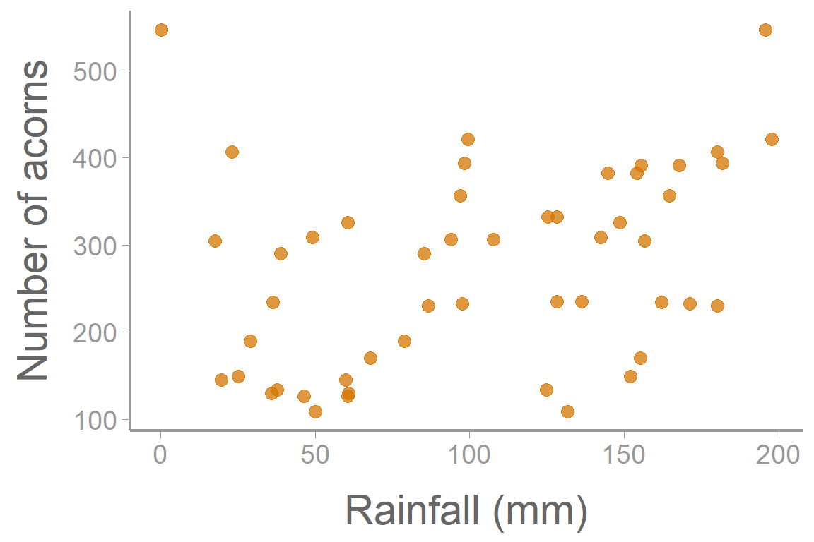
a simple model
\[\Huge y = a + bx\]

It may not be obvious, but this is essentially the only model we will use this semester1
[1] With some minor variations, mainly in \(x\)
a simple model
\[\Huge y = a + bx\]

If we want to use this as a statistical model, what’s missing?
a simple model
\[\Huge y = a + bx\]
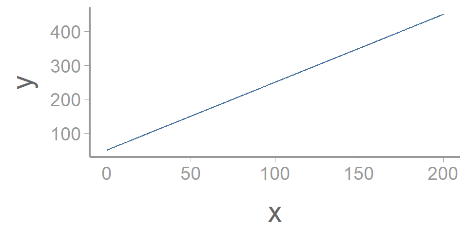
If we want to use this as a statistical model, what’s missing?
Stochasticity!
a simple model
\[\Huge y = a + bx\]
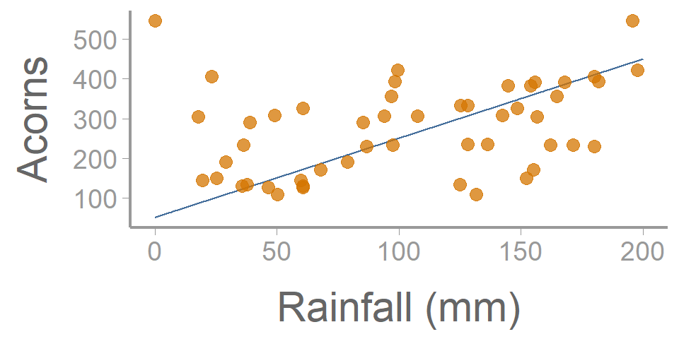
If we want to use this as a statistical model, what’s missing?
Stochasticity!
the linear model
statistics cookbook
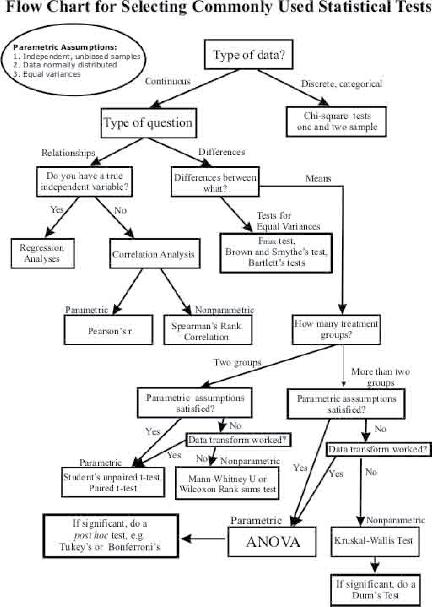
the linear model
\[\Large response = deterministic\; part+stochastic\; part\]
\[\underbrace{\LARGE E[y_i] = \beta_0 + \beta_1 \times x_i}_{Deterministic}\]
\[\underbrace{\LARGE y_i \sim normal(E[y_i], \sigma)}_{Stochastic}\]
the linear model
Sometimes you will see linear models written as:
\[\LARGE y_i = \beta_0 + \beta_1 x_i + \epsilon_i\]
\[\LARGE \epsilon_i \sim normal(0, \sigma)\]
with the \(\large \epsilon_i\) terms referred to as residuals or residual error
Mathematically, the two formulations are identical
We will use both formulations
a note on notation
Throughout the semester, we will try to be consistent with mathematical notation, e.g.
\(y\) = response/dependent variable
\(x\) = predictor/independent variable
\(\mu\) = population mean
\(\sigma\) = population standard deviation
\(\beta\) = model parameter (i.e., intercept/slope)
. . .
To the extent possible, these follow conventions used in many textbooks/papers (but there is a lot of variation between authors)
. . .
Remember that these are just symbols - you could replace them with other symbols (e.g., emoji) and it would not change their interpretation!
parameter interpretation
\(\large \beta_0\) = intercept
- The expected value of the response variable, \(\large E[y_i]\), when all predictors \(=0\)
\(\large \beta_n\) = slope
- The expected change in the response variable for a one unit change in the associated predictor variable \(\large x_n\)
Mathematically, the interpretation of the intercept and slope(s) is always the same
Ecologically, the interpretation will depend on:
the structure of the predictor variables (continuous vs. categorical)
the units of the predictor variables (e.g., scaled vs unscaled)
the inclusion of interaction terms
We will discuss each of these scenarios in detail as the semester progresses
the linear model
A “simple” example
\[\underbrace{\LARGE E[y_i] = -2 + 0.5 \times x_i}_{Deterministic}\]
. . .
\[\underbrace{\LARGE y_i \sim normal(E[y_i], \sigma=0.25)}_{Stochastic}\]
. . .
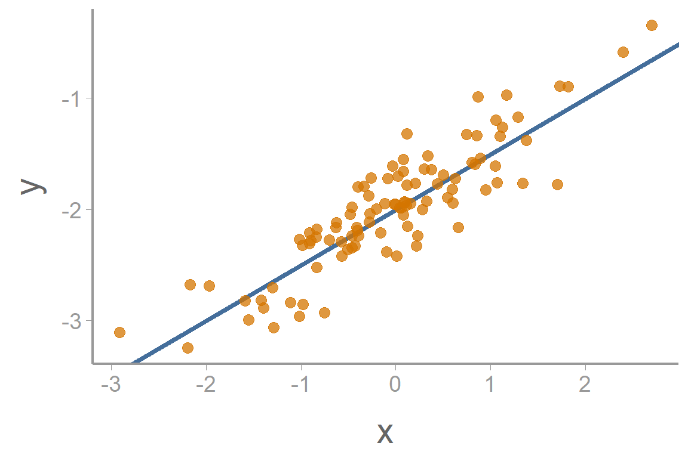
the linear model
A more complex model
\[\large y_i = \beta_0 + \beta_1x_{i1} + \beta_2x_{i2} + ... + \beta_px_{ip} + \epsilon_i\]
. . .
Each \(\beta\) coefficient is the effect of a specific predictor variables \(x\)
Predictor variables may be continuous, binary, factors, or a combination
We will cover more complex models (and interpretation) later
is this a linear model?
\[\Large y = 20 + 0.5x - 0.3x^2\]
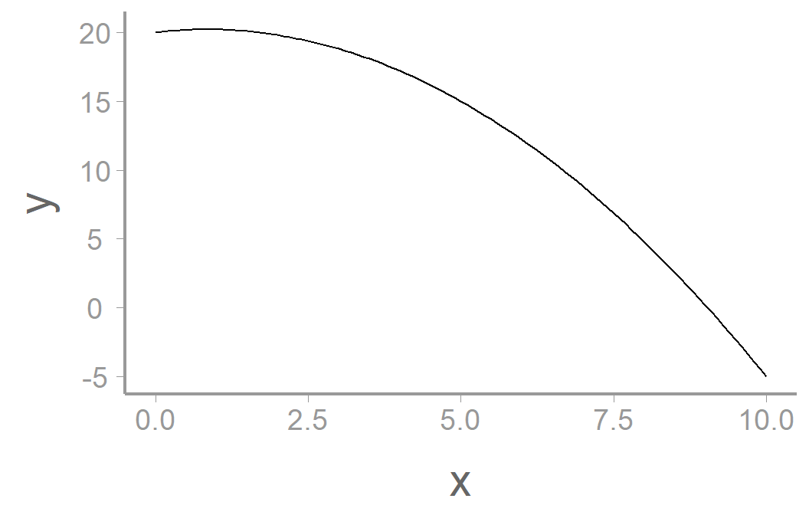
residuals
One concept we will talk about a lot is residuals, i.e., \(\Large \epsilon_i\)
. . .
- Residuals are the difference between the observed values \(\large y_i\) and the predicted values \(\large E[y_i]\) - how much variation in \(\large y\) is explained by \(\large x\)?
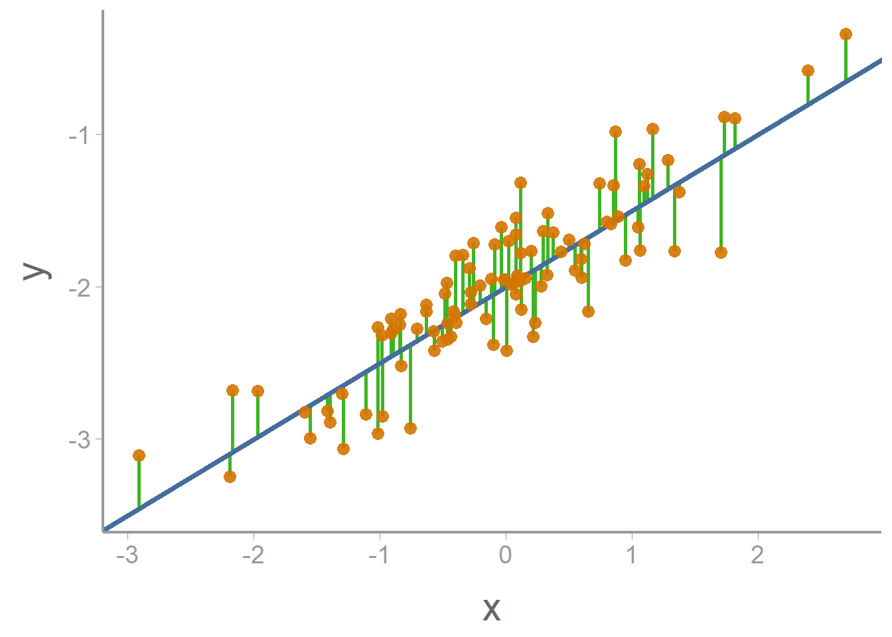
residuals
One concept we will talk about a lot is residuals, i.e., \(\Large \epsilon_i\)
- Residuals are the difference between the observed values \(\large y_i\) and the predicted values \(\large E[y_i]\) - how much variation in \(\large y\) is explained by \(\large x\)?
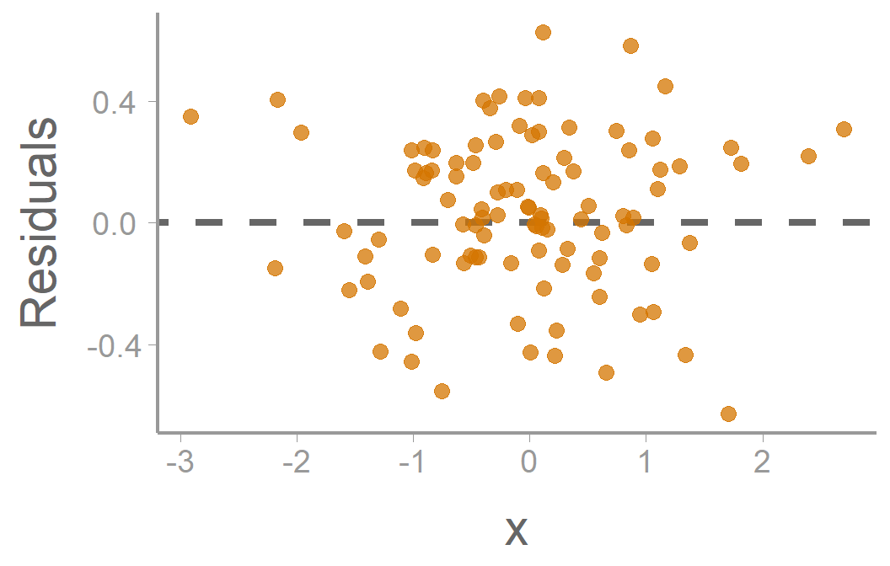
. . .
- Parameters are generally estimated by finding values that minimize residual error (e.g., ordinary least squares)
. . .
- Useful for assessing whether data violate model assumptions
assumptions
assumptions
EVERY model has assumptions
. . .
- Assumptions are necessary to simplify real world to workable model
. . .
- If your data violate the assumptions of your model, inferences may be invalid
. . .
- Always know (and test) the assumptions of your model1
[1] You know what happens when you assume…
linear model assumptions
\[\Large y_i = \beta_0 + \beta_1 x_i + \epsilon_i\]
\[\Large \epsilon_i \sim normal(0, \sigma)\]
- Linearity: The relationship between \(x\) and \(y\) is linear
- Normality: The residuals are normally distributed2
[2] Note that these assumptions apply to the residuals, not the data!
- Homogeneity: The residuals have a constant variance at every level of \(x\)
- Independence: The residuals are independent (i.e., uncorrelated with each other)
assumptions
\[\large y_i = \beta_0 + \beta_1x_i + \epsilon_i\] \[\large \epsilon_i \sim normal(0, \sigma)\]
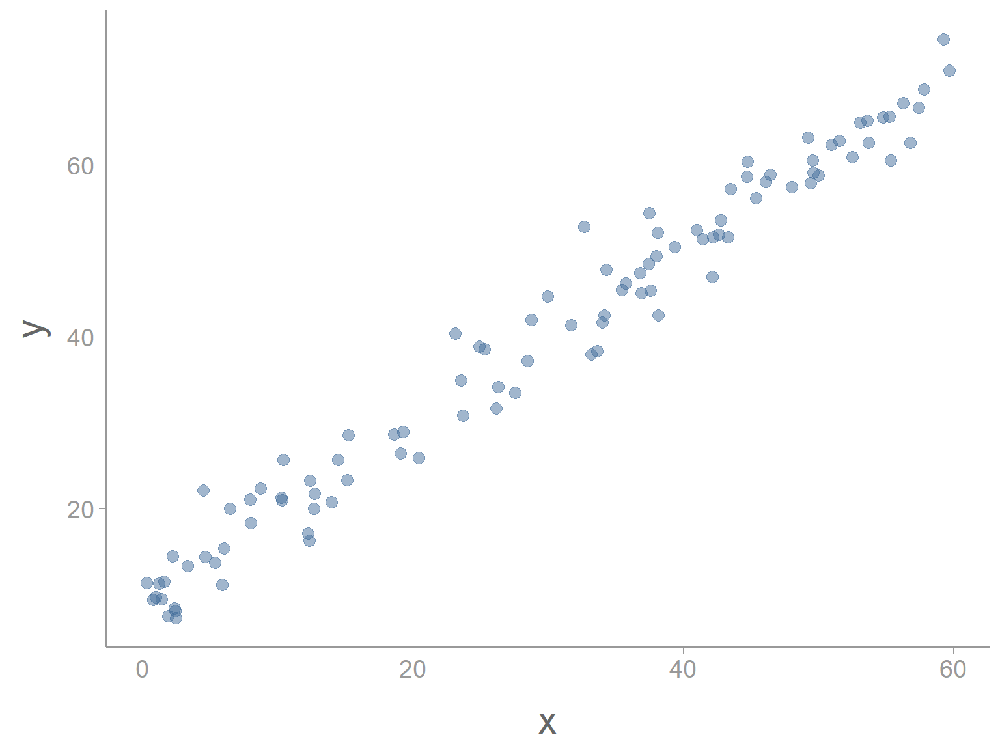
assumptions - linearity
\[\large y_i = \color{#D47500}{\beta_0 + \beta_1x_i} + \epsilon_i\] \[\large \epsilon_i \sim normal(0, \sigma)\]
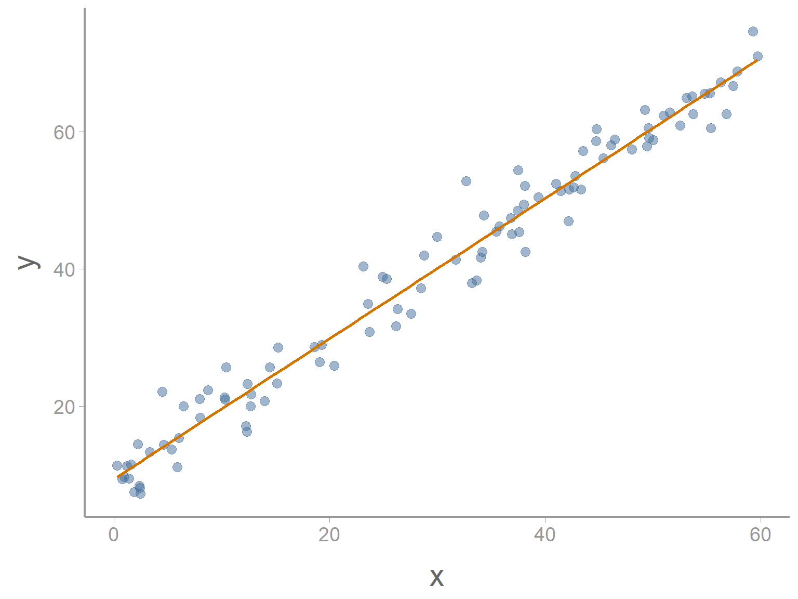
assumptions - normality
\[\large y_i = \color{#D47500}{\beta_0 + \beta_1x_i} + \epsilon_i\] \[\large \epsilon_i \sim \color{#3CB521}{normal}(0, \sigma)\]
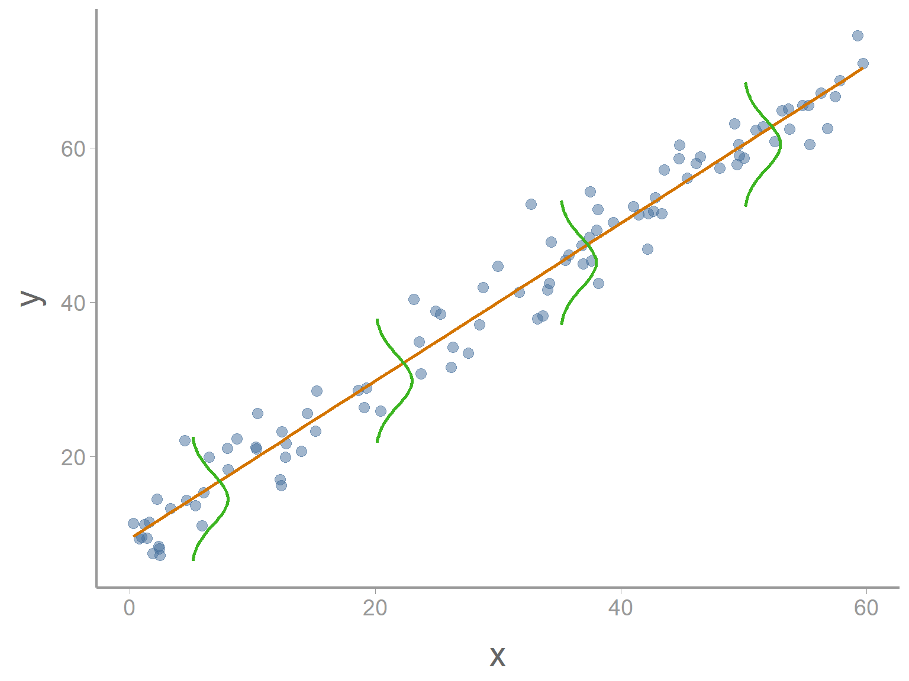
assumptions - homogeneity
\[\large y_i = \color{#D47500}{\beta_0 + \beta_1x_i} + \epsilon_i\] \[\large \epsilon_i \sim \color{#3CB521}{normal}(0, \color{#CD0200}\sigma)\]
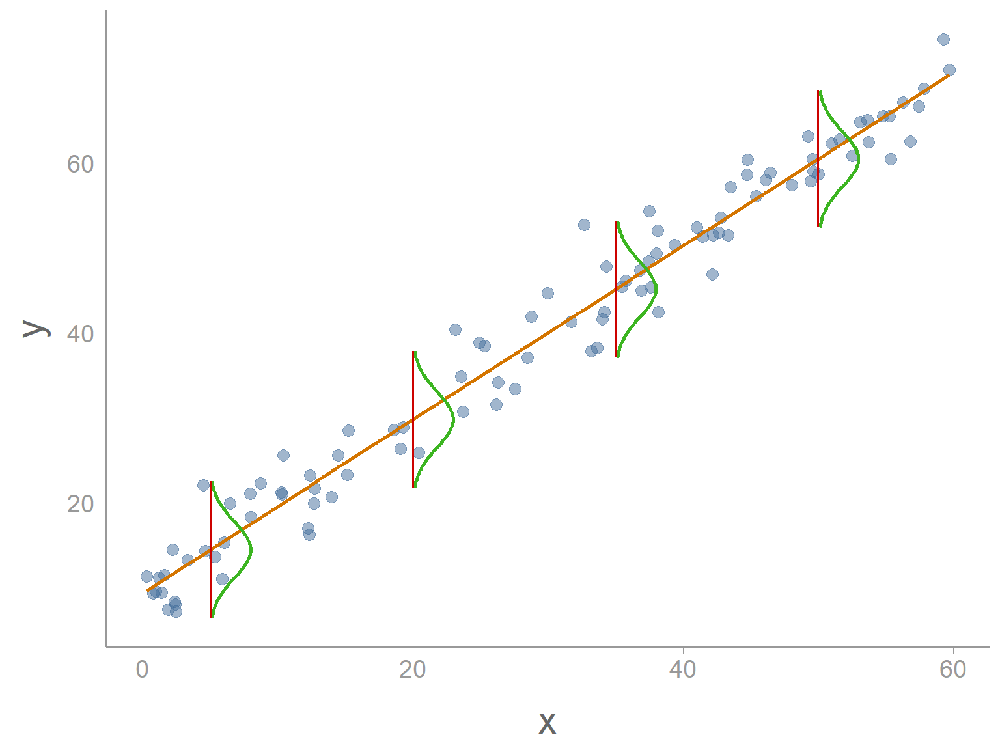
assumptions - normality
Remember that the normality assumption applies to the residuals not the data.
In the data below, the histogram of the response variable y shows that the data is clearly not normally distributed
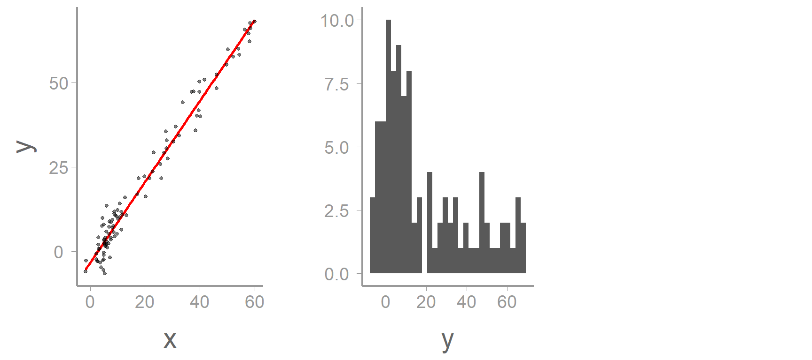
assumptions - normality
Remember that the normality assumption applies to the residuals not the data.
In the data below, the histogram of the response variable y shows that the data is clearly not normally distributed
But a histogram of the residuals (green lines) shows that they are normal (or at least close)
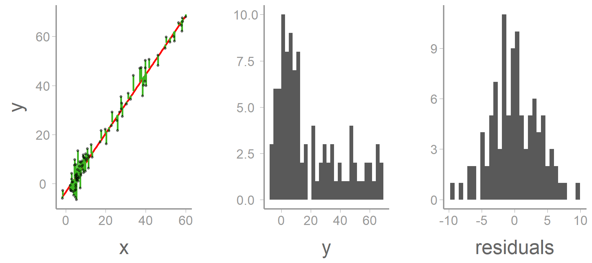
linear models
Very flexible
. . .
- Predictor(s) can take different forms (binary, continuous, factor)
. . .
- Can contain many predictors
. . .
- Can model non-linear relationships
. . .
Link different “tests” (e.g., t-tests, ANOVA, ANCOVA, linear regression)
. . .
Can be used for different statistical goals
Estimating unknown parameters
Testing hypotheses
Describing stochastic systems
Making predictions that account for uncertainty
statistical inference
Linear models allow us to quantify relationships between variables
. . .
Generally, models are fit to samples
The intercept and slope values correspond to the observed response and predictor values
If we repeated our study, the sampled values would change and so would the intercept/slope values
. . .
We’re generally interested in the population, not the sample
- The intercept and slope values fitted to a particular sample are considered estimates of the true population values
. . .
Inference about populations requires quantifying how well our estimated values represent the true population values (which we can never know)
- This will be the topic of the next lecture (and a theme we will revisit throughout the semester)